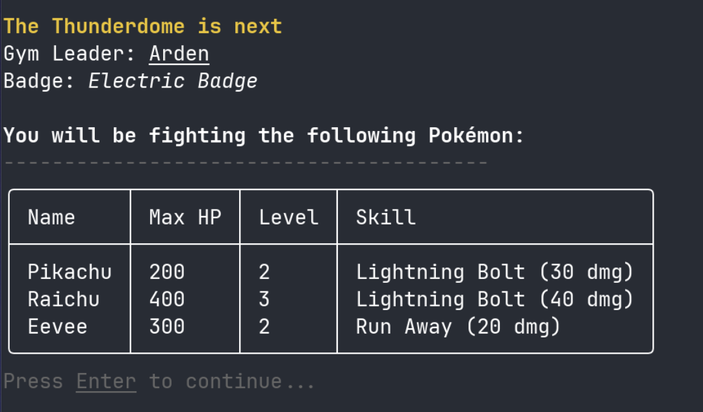

Pokemon Pocket
A small console-based game originally made for school, but further improved on my own
Project Write-up
A small console-based game originally developed as a school project, but further improved from then on
Process

Step 1: Database
The first thing I did was to design all the models for the items I will be storing on the database. Since I was developing a game, it involved creating models for Pokemon, moves, and trainers. This was a crucial step to ensure that the game's data was well-structured and could be easily accessed and manipulated. Once that was done, the final step was configuring to work with Microsoft's EntityFramework.
Step 2: Game Logic
Following the database setup, I implemented the core gameplay loop based on the school assignment's requirements. This included a command-line menu for players to add, list, and evolve their Pokemon. I developed the logic for adding new Pokemon, and listing all caught Pokemon sorted by EXP. The most interesting part was the 'Update' operation — the evolution system. I wrote the logic to check which Pokemon were eligible to evolve based on the number of same-type creatures collected, and then updated their stats. Additionally, I implemented a "calculateDamage()" method for each Pokemon subclass, incorporating unique damage multipliers for characters like Pikachu and Eevee, which formed the basis of the combat mechanics.
Step 3: Fighting System
After submitting the project, I decided I want to make it more like a proper game (rather than just a small tool where you type in words and get feedback), so I began work on my combat system. This involved creating a Pokemon factory for random Pokemon generation, which allowed for the ability to add a fight-and-catch system to add more interactivity to the project. The success rate of catching a wild pokemon is the same as the percentage of health gone, so for example a pokemon at 100hp when its max is 300hp will have a 67% chance to be caught
Step 4: Spectre.Console UI Overhaul
With the core gameplay mechanics in place, I decided to do a complete UI overhaul using Spectre.Console. This was going to replace the basic console output with a more visually appealing and interactive interface, featuring rich components like tables and colorful text. The goal was to create a more engaging and user-friendly experience, moving beyond a simple command-line tool to a polished console application.
Step 5: Gym System
To add more challenge and progression, I finally a gym system. This featured a series of gyms, each with a powerful Gym Leader that players can battle. Defeating a Gym Leader awards the player with a badge and 300 gold, providing a clear sense of accomplishment and a long-term goal for players to strive for. Additionally, while implementing this feature I added a small "Gene-splicing" feature, where players can take two of their pre-existing Pokemon and create a new, much stronger Pokemon which is a combination of the two
Gallery

Key Learnings
- Learned how to use Spectre.Console to create beautiful console applications.
- Gained experience with Entity Framework and database design.
- Improved my understanding of object-oriented programming principles.
Initiate
A B2B AI marketplace connecting enterprises with AI vendors.
Project Write-up
As the solutions architect for Initiate, a B2B AI marketplace, I designed the system architecture and tech stack. Additonally, I developed both the frontend and backend for the product's messaging system, enabling real-time messaging between the SMEs and AI vendors.
Process

Step 1: Wireframing
The initial phase of the project involved creating a comprehensive wireframe using Figma. This allowed us to establish a clear visual hierarchy and user flow, ensuring an intuitive experience for both SMEs and AI vendors. The wireframe focused on creating a clean and modern interface, with easy navigation and clear calls-to-action. This foundational step was crucial in aligning our team on the product's vision and functionality before moving into development.

Step 2: Backend & API
Once the wireframe was done, we moved on to developing the database, using Prisma as the ORM for the job. I also developed the backend APIs for the messaging feature, implementing CRUD operations. This was initially done using a basic RESTful approach, and later migrated to WebSockets to enable real-time communication, significantly enhancing the user experience.

Step 3: Frontend Development & Integration
With the backend APIs in place, the focus shifted to developing the frontend using Next.js. A key aspect was meticulously following the Figma wireframes to ensure the user interface was intuitive and visually appealing. I utilized shadcn/ui as the UI library, aiming for a modern yet clean aesthetic, particularly for the real-time messaging components. This involved integrating the frontend with the backend APIs, ensuring seamless data flow and real-time communication for the messaging feature, providing a robust and responsive user experience.
Gallery
Key Learnings
- Using React (via Next.js) to deveolp mobile-responsive UIs
- Improved SSR performance by code-splitting dynamic imports.
- Developing RESTful APIs
- Gained experience designing B2B user experiences.
Advent of Code 2024
A christmas-themed set of algorithmic puzzles with increasing difficulty
Project Write-up
Advent of Code is an online event that provides a series of programming challenges designed to test problem-solving and algorithmic thinking. In 2024, I decided to join the event to test my knowledge to the limits. I ended up doing the first 12 challenges, landing me among 10% of all competitors
Process
Step 1: Problem Deconstruction
Each Advent of Code puzzle presents a unique challenge. My first step was always to thoroughly deconstruct the problem statement, identify the core requirements, and analyze the provided examples. For more complex puzzles, I would use pen and paper or a whiteboard to visualize the problem, map out data structures, and brainstorm potential algorithms before writing any code. This helped in breaking down the problem into smaller, manageable parts.

Step 2: Algorithmic Implementation
Once I had a solid plan, I moved on to implementation using Python. The focus was on writing clean, efficient, and readable code to solve the puzzle. This often involved implementing specific algorithms (like pathfinding or graph traversal) and using appropriate data structures. After getting a correct answer for the first part of the puzzle, I would then refactor and adapt my solution for the second part, which often introduced new constraints or a larger scale, testing the limits of the initial approach.
Gallery

Key Learnings
- Sharpened my problem-solving and algorithmic thinking skills under pressure.
- Gained proficiency in implementing complex algorithms and data structures in Python.
- Learned the importance of code optimization for performance-critical tasks.
- Developed a systematic approach to deconstructing and solving complex programming challenges/issues.